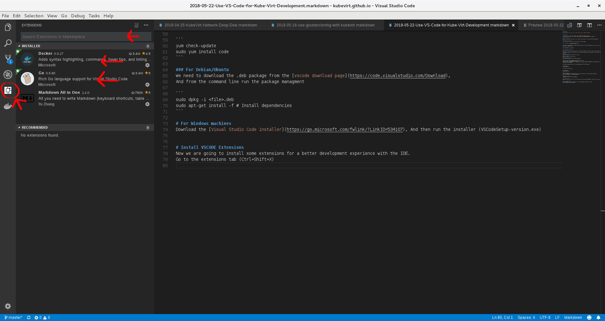
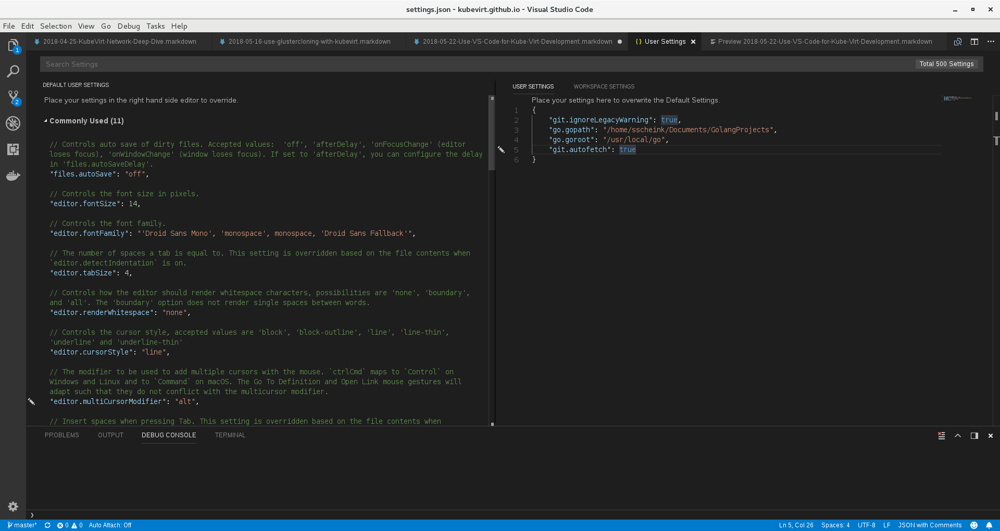
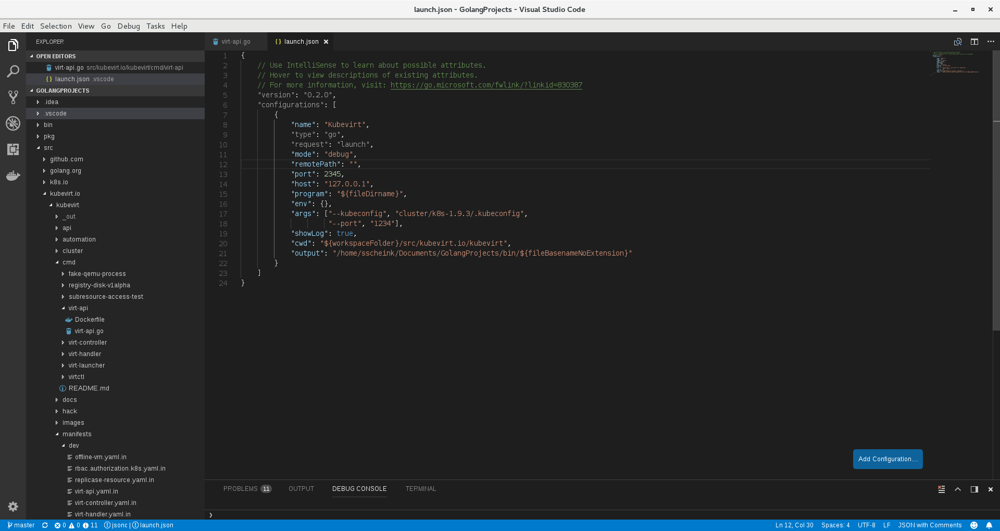
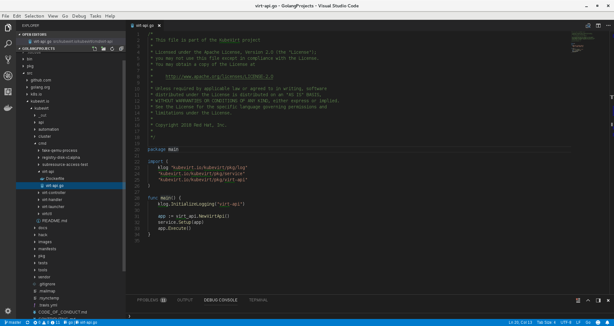
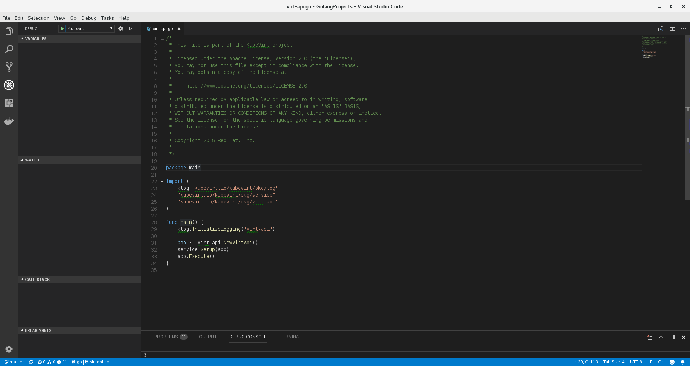

Introduction
In this post we will install and configure Visual studio code (vscode) for KubeVirt development and debug.
Visual Studio Code is a source code editor developed by Microsoft for Windows, Linux and macOS.
It includes support for debugging, embedded Git control, syntax highlighting, intelligent code completion, snippets, and code refactoring.
Golang Installation
GO installation is required, We can find the binaries in golang page.
Golang Linux Installation
After downloading the binaries extract them with the following command:
tar -C /usr/local -xzf go$VERSION.$OS-$ARCH.tar.gz
Now lets Add /usr/local/go/bin to the PATH environment variable.
You can do this by adding this line to your /etc/profile (for a system-wide installation) or $HOME/.profile:
export PATH=$PATH:/usr/local/go/bin
Golang Windows Installation
Open the MSI file and follow the prompts to install the Go tools.
By default, the installer puts the Go distribution in C:\Go.
The installer should put the C:\Go\bin directory in your PATH environment variable.
You may need to restart any open command prompts for the change to take effect.
VSCODE Installation
Now we will install Visual Studio Code in our system.
For linux machines
We need to choose our linux distribution.
For RHEL/Centos/Fedora
The following script will install the key and repository:
sudo rpm --import https://packages.microsoft.com/keys/microsoft.asc
sudo sh -c 'echo -e "[code]\nname=Visual Studio Code\nbaseurl=https://packages.microsoft.com/yumrepos/vscode\nenabled=1\ngpgcheck=1\ngpgkey=https://packages.microsoft.com/keys/microsoft.asc" > /etc/yum.repos.d/vscode.repo'
Then update the package cache and install the package using dnf (Fedora 22 and above):
dnf check-update
sudo dnf install code
Or on older versions using yum:
yum check-update
sudo yum install code
For Debian/Ubuntu
We need to download the .deb package from the vscode download page, and from the command line run the package management.
sudo dpkg -i <file>.deb
sudo apt-get install -f # Install dependencies
For Windows machines
Download the Visual Studio Code installer, and then run the installer (VSCodeSetup-version.exe)
Go Project struct
Lets create the following structure for our kubevirt project development environment:
├── <Go-projects-folder> # Your Golang projects root folder
│ ├── bin
│ ├── pkg
│ ├── src
│ │ ├── kubevirt.io
Now navigate to kubevirt.io folder and run:
git clone <kubevirt-fork>
Install VSCODE Extensions
Now we are going to install some extensions for a better development experience with the IDE.
Open vscode and select your go project root folder you created in the last step.
On the extensions tab (Ctrl+Shift+X), search for golang and install it.
Now open the command palette (Ctrl+Shift+P) view->Command Palette and type “Go: install/update tools”, this will install all the requirements for example: delve debugger, etc…
(optional) We can install docker extension for syntax highlighting, commands, etc..

GOPATH and GOROOT configuration
Open the vscode configuration file (ctrl+,) file->preferences->settings.
Now on the right file we need to add this configuration:
"go.gopath": "<Go-projects-folder>",
"go.goroot": "/usr/local/go",

Create debug configuration
For the last part we are going to configure the debugger file, open it by Debug->Open Configurations and add to the configuration list the following structure
** Change the
{
"name": "Kubevirt",
"type": "go",
"request": "launch",
"mode": "debug",
"remotePath": "",
"port": 2345,
"host": "127.0.0.1",
"program": "${fileDirname}",
"env": {},
"args": ["--kubeconfig", "cluster/k8s-1.9.3/.kubeconfig",
"--port", "1234"],
"showLog": true,
"cwd": "${workspaceFolder}/src/kubevirt.io/kubevirt",
"output": "<Go-projects-folder>/bin/${fileBasenameNoExtension}"
}

Debug Process
For debug we need to open the main package we want to debug.
For example if we want to debug the virt-api component, open the main package:
kubevirt.io/cmd/virt-api/virt-api.go

Now change to debug view (ctrl+shift+D), check that we are using the kubevirt configuration and hit the play button

More Information
For more information, keyboard shortcuts and advance vscode usage please refer the following link